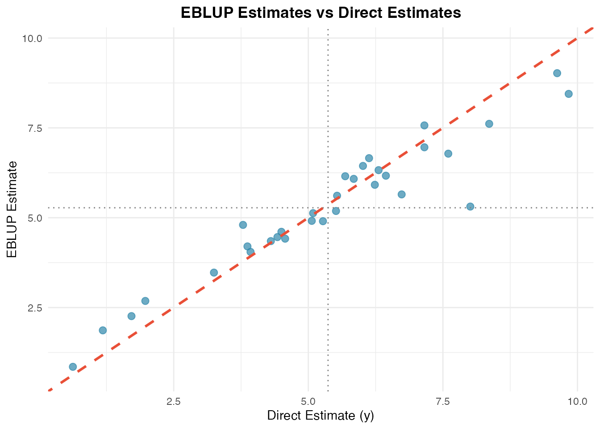
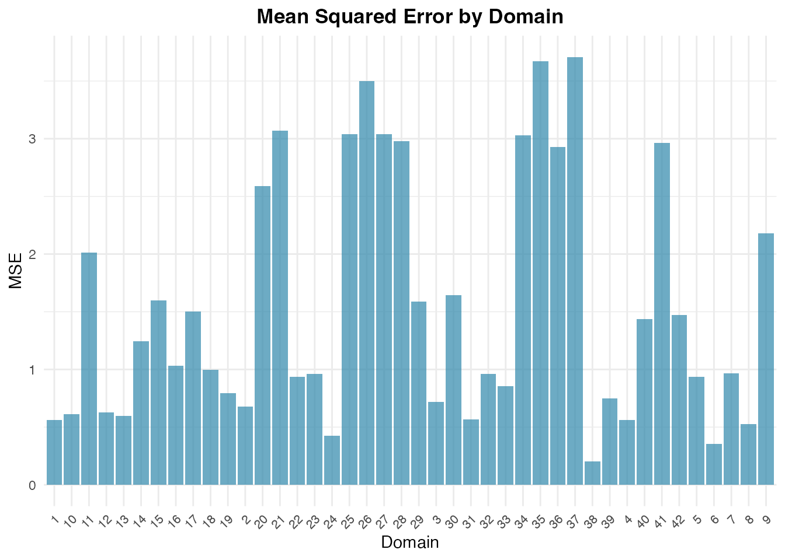

Introduction
Small Area Estimation (SAE) encompasses statistical techniques designed to produce reliable estimates for sub-populations or geographical domains where sample sizes are too small for direct survey estimators to achieve acceptable precision.
The fastsae package provides high-performance C++
implementations (via Rcpp and RcppArmadillo)
for standard and advanced SAE models. It offers:
- Ultra-fast computation: Fisher-scoring and numerical solvers compiled in C++.
-
Exact numerical equivalence: Parameter estimates
and variance components match gold-standard implementations in the
saepackage to machine precision. -
Modern S3 interface: Seamless integration with
standard R methods (
summary(),coef(),fitted(),residuals(),autoplot()).
The Fay-Herriot Model
The area-level model introduced by Fay and Herriot (1979) links direct survey estimators with auxiliary variables :
where: -
represents domain-specific random effects. -
represents sampling errors with known sampling variance
(vardir).
The Empirical Best Linear Unbiased Predictor (EBLUP) is a weighted combination of the direct estimator and the regression-synthetic estimator:
where is the shrinkage factor ().
Step-by-Step Example
1. Load Package and Dataset
We use the built-in mys dataset (mean years of
schooling):
library(fastsae)
library(ggplot2)
data("mys")
head(mys)
#> # A tibble: 6 × 9
#> area y vardir rse x1 x2 x3 n weight
#> <int> <dbl> <dbl> <dbl> <dbl> <dbl> <dbl> <dbl> <dbl>
#> 1 1 8.36 0.662 9.73 124 24 14 7280. 0.0326
#> 2 2 7.60 0.837 12.0 89 18 9 2743. 0.0123
#> 3 3 5.51 0.882 17.0 57 19 5 1706. 0.00764
#> 4 4 3.87 0.658 21.0 88 35 19 3073. 0.0138
#> 5 5 6.31 1.28 17.9 141 46 29 13400. 0.0600
#> 6 6 3.93 0.388 15.9 96 29 10 2004. 0.008972. Fit Fay-Herriot Model (eblup_fh)
To fit an area-level Fay-Herriot model using Restricted Maximum Likelihood (REML):
# Fit Fay-Herriot model
fit_fh <- eblup_fh(
formula = y ~ x1 + x2 + x3,
vardir = ~vardir,
data = mys,
method = "REML",
print_result = FALSE
)3. Model Summary and Coefficients
The standard S3 summary() method provides comprehensive
model diagnostics, variance components, and coefficient tests:
summary(fit_fh)
#>
#> ── Summary of fastsae Fit ──────────────────────────────────────────────────────
#> Call :
#> eblup_fh(formula = y ~ x1 + x2 + x3, vardir = ~vardir, data = mys, method =
#> "REML", print_result = FALSE)
#>
#> ✔ Convergence: Yes (in 6 iterations)
#> Model: Fay-Herriot (Area-level)
#> Method: eblup
#>
#> Variance Components:
#> sigma2_u: 2.608103
#>
#> Coefficients:
#> beta std.error zvalue pvalue
#> (Intercept) 3.1077510 0.7697687 4.0372527 0.0001
#> x1 -0.0019323 0.0098886 -0.1954019 0.8451
#> x2 0.0555184 0.0614129 0.9040187 0.3660
#> x3 0.0335344 0.0580013 0.5781663 0.5632
#>
#> Goodness of Fit:
#> loglikelihood AIC BIC
#> -65.14251 140.28502 147.61370
#>
#> EBLUP Summary Statistics:
#> eblup mse rse
#> Min. :0.8506 Min. :0.2037 Min. : 9.844
#> 1st Qu.:4.1973 1st Qu.:0.6886 1st Qu.:14.889
#> Median :5.0196 Median :1.0156 Median :22.157
#> Mean :5.0746 Mean :1.5434 Mean :26.275
#> 3rd Qu.:6.1360 3rd Qu.:2.4886 3rd Qu.:35.020
#> Max. :9.0220 Max. :3.7074 Max. :53.065You can extract fixed-effects coefficients using
coef():
coef(fit_fh)
#> (Intercept) x1 x2 x3
#> 3.107750953 -0.001932259 0.055518370 0.033534410Fitted EBLUP estimates and residuals can be extracted using standard generics:
4. Diagnostic Plots (autoplot)
fastsae extends ggplot2::autoplot() to
provide convenient diagnostic and comparison plots.
Direct Estimates vs EBLUP
Comparing the direct estimates against EBLUP demonstrates shrinkage towards the regression synthetic line:
autoplot(fit_fh, type = "estimates")
Mean Squared Error (MSE) Across Domains
Inspect domain-level uncertainty with MSE plots:
autoplot(fit_fh, type = "mse")
Exact Numerical Equivalence with sae
fastsae produces results that are mathematically
identical to sae::eblupFH:
if (requireNamespace("sae", quietly = TRUE)) {
mys_clean <- as.data.frame(na.omit(mys))
fit_fast <- eblup_fh(y ~ x1 + x2 + x3, vardir = ~vardir, data = mys_clean, print_result = FALSE)
fit_sae <- sae::eblupFH(y ~ x1 + x2 + x3, vardir = vardir, data = mys_clean)
# Check EBLUP estimates
all.equal(fit_fast$df_eblup$eblup, as.vector(fit_sae$eblup))
# Check regression coefficients
all.equal(as.vector(coef(fit_fast)), as.vector(fit_sae$fit$estcoef$beta))
# Check random effect variance (sigma2_u)
all.equal(fit_fast$random_effect_var, fit_sae$fit$refvar)
}
#> [1] TRUE